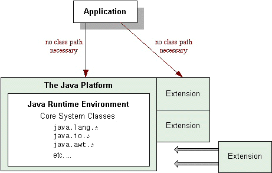

The extension mechanism was introduced as a new feature in the JavaTM 1.2 platform. The extension mechanism provides a standard, scalable way to make custom APIs available to all applications running on the Java platform. As of the Java 1.3 platform release, Java extensions are also referred to as optional packages. This trail may use both terms interchangeably.Extensions are groups of packages and classes that augment the Java platform through the extension mechanism. The extension mechanism enables the runtime environment to find and load extension classes without the extension classes having to be named on the class path. In that respect, extension classes are similar to the Java platform's core classes. That's also where extensions get their name -- they, in effect, extend the platform's core API.
Since this mechanism extends the platform's core API, its use should be judiciously applied. Most commonly it is used for well standarized interfaces such as those defined by the Java Community ProcessSM, although it may also be appropriate for site wide interfaces.
 As the diagram indicates, extensions act as "add-on" modules to the Java platform. Their classes and public APIs are automatically available to any applications running on the platform.
The extension mechanism also provides a means for extension classes to be downloaded from remote locations for use by applets.
Extensions are bundled as Java Archive (JAR) files, and this trail assumes that you are familiar with the JAR file format. If you're not up to speed on JAR files, you might want to review some JAR-file documentation before proceeding with the lessons in this trail:
- The Packaging Programs in JAR Files lesson in this tutorial.
- The JAR Guide in the JDKTM documentation.
This trail has two lessons:
Creating and Using Extensions
This section shows you what you need to do to add an extension to your Java platform and how applets can benefit from the extension mechanism by downloading remote extension classes.
Making Extensions Secure
This section describes security privileges and permissions that are granted to extensions on your platform. You'll see how to use the Java platform's security architecture if you're writing extensions classes of your own.Additional Documentation
You can find further information about extensions in the The Java Extensions Mechanism section of the JDK documentation.